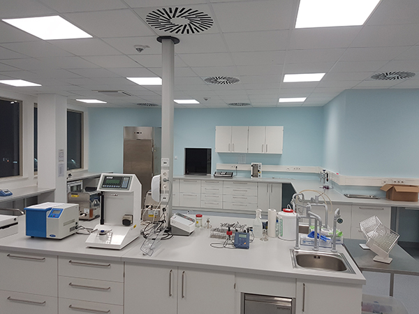
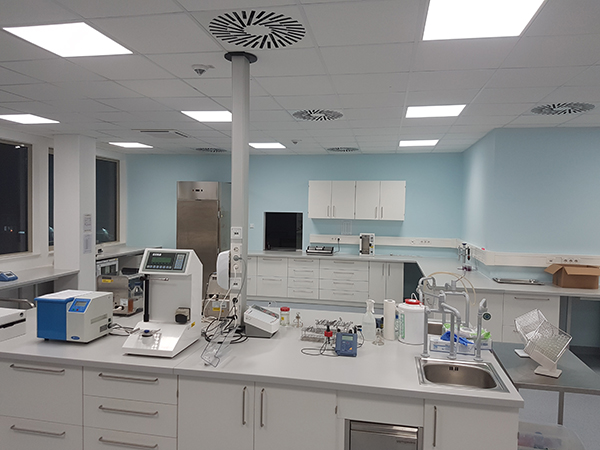

Über mich
Tiber Häbe|
Nicht jede Unternehmung hat die Größe und den Bedarf eine eigene Bauabteilung oder Personal für das
Facility Management vorzuhalten. Dennoch besteht hin und wieder die Notwendigkeit oder der Wunsch, die
räumlichen Rahmenbedingungen zu verändern.
Hierbei würde ich Sie gerne begleiten und für Sie der Fachmann sein, der Ihre Interessen gegenüber Behörden, Unternehmen und sonstigen Dritten ganz wie ein eigener Mitarbeiter vertritt. Diese Unterstützung kann während eines ganzes Projekts von der ersten Projektierung bis zur Schlüsselübergabe erfolgen oder nur punktuell für einzelne von Ihnen ausgesuchte Vorgänge. Ganz so wie Sie die Unterstützung wünschen und benötigen. Das Ziel ist, Ihnen den Rücken frei zu halten, damit Sie sich auf Ihr eigentliches Geschäftsfeld konzentrieren können. Auf dieser Website möchte ich Ihnen die diversen Möglichkeiten der Zusammenarbeit aufzeigen. Stöbern Sie sie durch und entscheiden sich in Ruhe, wo Sie gerne entlastet wären. Mein Büro Tiberius – Ingenieure ist eine Einmannunternehmung. Bei Bedarf kann ich aber auf weitere zeitlich begrenzte personelle Ressourcen zurückgreifen. Dadurch wird fachlich ein großer Bereich abgedeckt. |

|
Zur Person
Geboren 1965
Inhaber und Ingenieur des Büros Tiberius – Ingenieure
„Beratender Ingenieur“ der Bayerischen Ingenieurkammer – Bau
Bis 2008 als Bau- und Projektleiter sowie als Projektmanager im Schlüsselfertigbau bei Generalunternehmern tätig.
Verantwortlich für die Qualität, für die Einhaltung der Termine sowie für den finanziellen Erfolg der Schlüsselfertigprojekte.
Von 2008 bis Oktober 2012 Ressortleiter beim Labordienstleister Synlab in Augsburg.
Zuerst nur als Fachmann für Baufragen eingestellt, stellte sich schnell die Rentabilität einer Bauabteilung heraus, welche bis 2009 zum Ressort ausgebaut wurde.
Seit 2013 Betrieb des Ingenieurbüros Tiberius-Ingenieure.
Im Schwerpunkt Projektieren, Planen und Bauen von komplette Laboren in der Größenordnung bis 10 Mio. Euro.
Permanent aber auch Umbau von bestehenden Laboren, meist im Betrieb, der Größenordnung von bis zu 500 Tausend Euro sowie die Prüfung von fremden Laborplanungen und beratende Begleitung von Bauprojekten.
Ihre Vorteile
Durch die Beauftragung der Tiberius – Ingenieure erhalten Sie die Kompetenz aus dem Schlüsselfertigbau eines Generalunternehmers gepaart mit Erfahrungen aus der Planung von Laboren und Produktionsstätten sowie dem Aufbau eines konzernweiten Facility Management.
Es stehen keine Leitlinie der HOAI oder alt hergebrachte Projektmanagementmethoden im Vordergrund.
Die Suche nach der individuell besten Lösung für Ihr Projekt in wirtschaftlicher, qualitativer und terminlicher Hinsicht ist das Ziel.
Neue Herausforderungen, der Bau von noch nicht Dagewesenem, Ihre neue Innovation; all das stellt kein Problem dar.
Durch hohe Flexibilität und großem Einfallreichtum bringt Tiberius - Ingenieure Ihre komplexen und einzigartigen Projekte an den Start und sicher ins Ziel.

 



{kind=link}
{kind=link}
{kind=link}
{kind=link}
{kind=link}
{kind=link}
{kind=link}
{kind=link}
{kind=link}
{kind=link}
{kind=link}